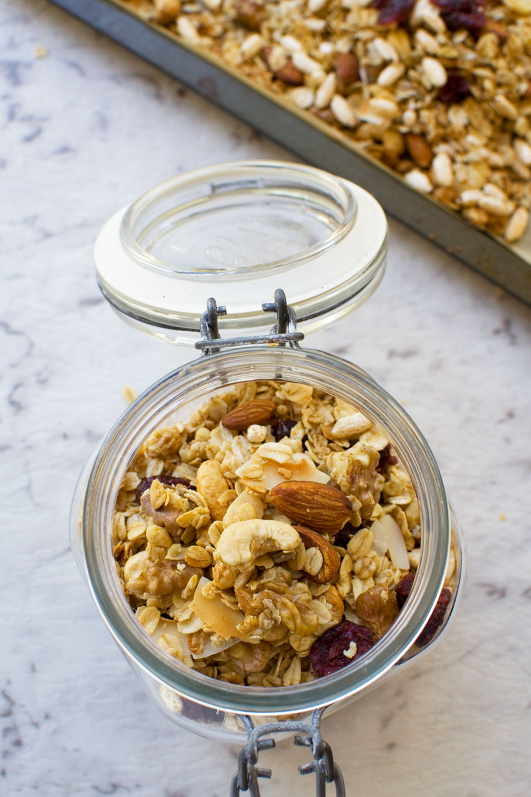

Low Sugar Granola

Description
Fill up at breakfast time with this healthy low-sugar granola, served with your choice of milk and sliced fresh strawberries. It'll keep you going until lunch.
Ingredients
- 200g Rolled Oats
- 150g Bag Mixed Nuts
- 150g Mixed Seeds
- 1 Orange, Zested
- 2 Tsp Mixed Spice
- 2 Tsp Cinnamon
- 2 Tbsp Cold Pressed Rapeseed Oil
- 1½ Tbsp Maple Syrup
Steps
- Heat oven to 160C/140C fan/gas 4. Mix all the ingredients in a bowl with a pinch of salt, then spread out on a baking tray.
- Roast for 30-35 mins until golden, pulling the tray out of the oven twice while cooking to give everything a good stir – this will help the granola toast evenly. Leave to cool. Will keep in an airtight container for one month.